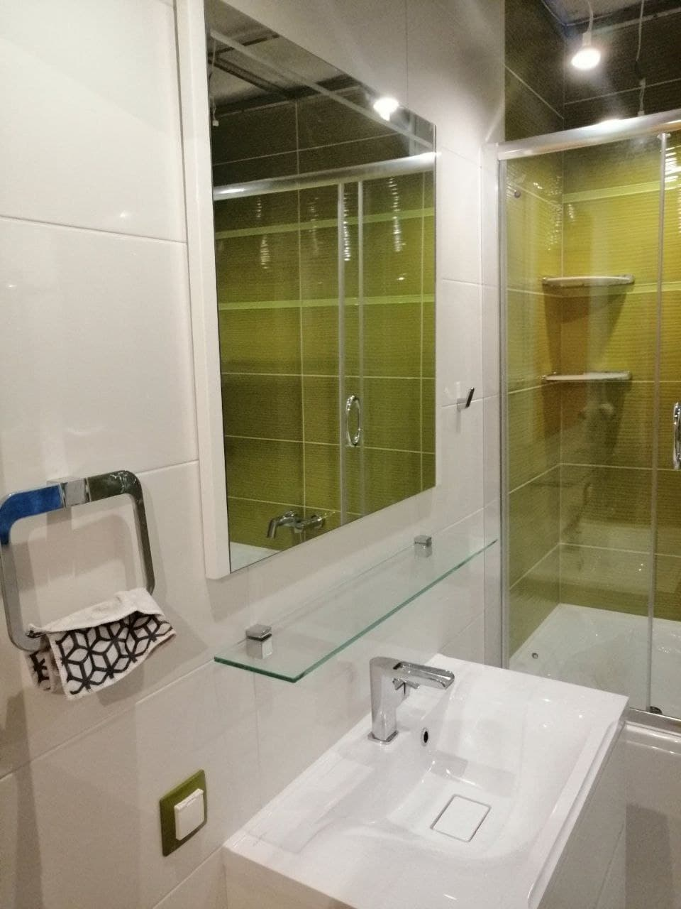
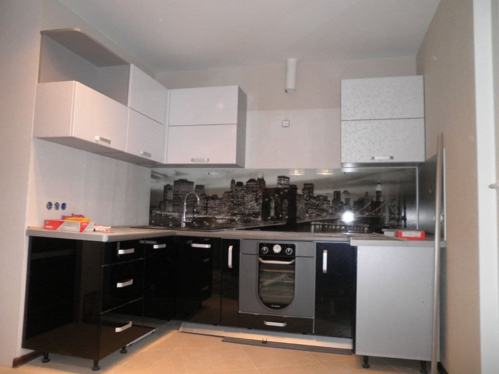
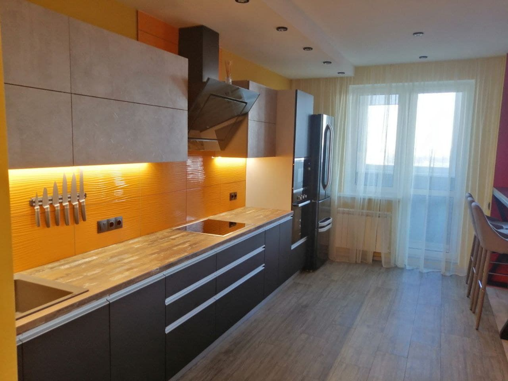

Опыт работы - более 10 лет
Сотни довольных клиентов - гарант качества
Штукатурные работы
Выравнивание стен любой сложности
Любой капитальный ремонт в квартире или доме сталкивается с процессом оштукатуривания стен. Штукатурка позволяет эффективно устранить любые неровности и дефекты поверхности. Однако для самостоятельной качественной обработки стен или потолка необходимы теоретические знания, практический опыт и соблюдение последовательности этапов работы. Мы гарантируем качественное оштукатуривание любой сложности с соблюдением всех технологий.
Малярные работы
Шпаклевание, поклейка обоев, покраска стен, потолков и прочего
Несмотря на кажущуюся легкость, малярные работы – очень трудоемкий и ответственный процесс, требующий высокого уровня подготовки и специализированного строительного оборудования. Обратившись к нам, вы гарантированно получите качественный результат, независимо от сложности работы. Выполняя весь спектр малярных работ, мы используем современные отделочные материалы, благодаря которым, ремонт в вашей квартире долгое время не будет нуждаться в обновлении.
Гипсокартонные работы
Элементы из гипокартона на любой вкус
Из гипсокартона можно сделать очень интересные и необычные конструкции различных форм, подчеркивающих красоту помещения. Из этого материала получаются уникальные и эффектные потолки, которые особенно привлекательно смотрятся со светодиодными лентами и точечными светильниками. Но за этой эстетической изящностью и красотой кроются сложности в создании и установке конструкций из гипсокартона. Обратившись к нам, вы останетесь довольны результатом, а качество работ позволит вам не вспоминать о ремонте ещё долгое время.
Отзывы
Высокое качество услуг - залог удовлетворённости результатом
Александр
Спасибо Антону огромное! Делал нам санузлы. Плитку положил супер. Подрезку сделал идеально, отверстия все чётко в размер. Цена на 100% соответствует качеству. Другую квартиру будем делать только с ним.
Юлия
Всё супер! Держат слово, работают качественно, соблюдая технологию и сроки. Результат превзошел все ожидания. Советую всем, кто ценит своё время, нервы и деньги.
Евгений
Делаю с Антоном уже вторую квартиру. Качество и скорость выполнения работ как всегда на высоте. Мы с женой очень довольны. Рекомендую всем, кому нужен качественный ремонт.
Контакты
anton.buts@mail.ru +375(29)769-25-78 remont.sdelaet.anton